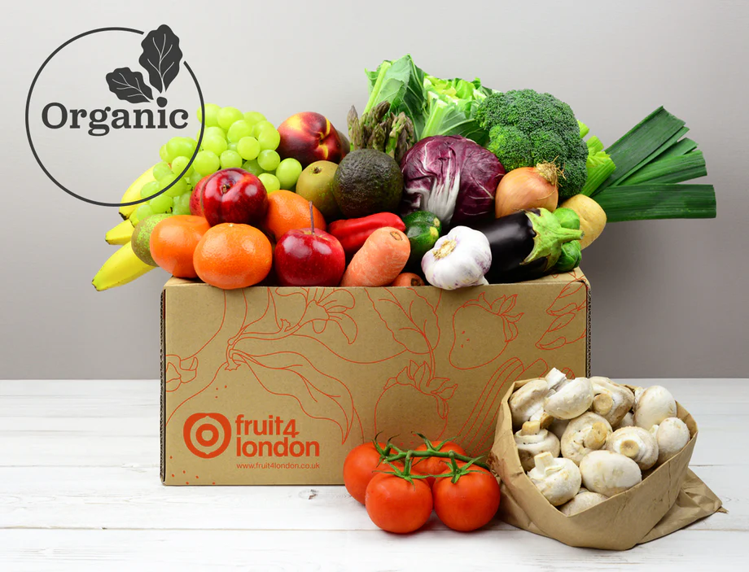
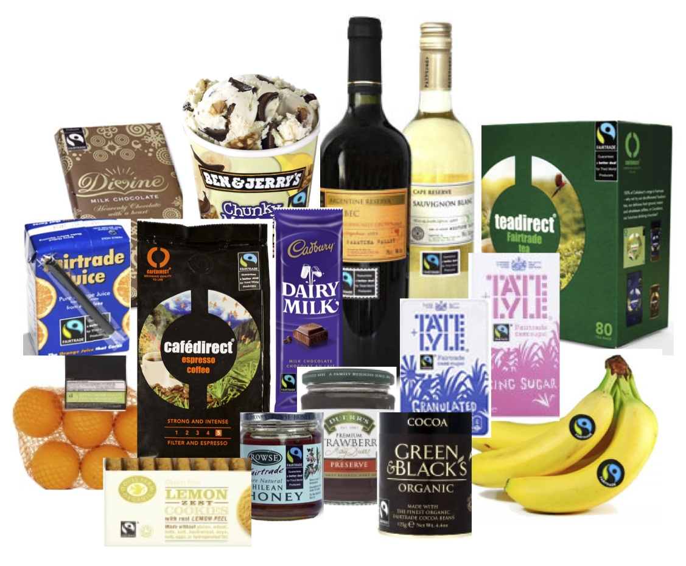

Organic Vegetables and Fruits

Fruits and vegetables that are grown using precise organic farming methods are known as organic products. The term "organic" describes a production approach that avoids the use of synthetic chemicals, genetically modified organisms (GMOs), and some conventional farming techniques in favor of sustainable and ecologically friendly practices.
Organic Grains

Global diets are built around staple food crops, such as organic grains. T hey are grown for their edible seeds, which are also a good source of fiber, vitamins, minerals, proteins, and carbs. Cereals and grains are essential to the world's food security.
Examples:
- Wheat
- Oats
- Rice
- Rye
- Barley
- Millet
- Quinoa
- Corn
Fair Trade Products

Fair trade products are goods, typically agricultural or handmade, produced and traded in a way that ensures fair prices and wages for producers, as well as social and environmental sustainability. Fair trade principles aim to empower small-scale farmers and workers in developing countries by providing them with better trading conditions and promoting sustainable farming practices.
Examples:
- coffee
- tea
- chocolate
- sugar
- Support for Sustainable Agriculture
Pulses and Legumes

Pulses & Legumes are plant-based foods of the Fabaceae family. These crops are distinguished by their high protein, high fiber, high vitamin, and high mineral content seeds. While legumes are a more general category that includes both fresh and dried seeds, pulses are a subclass of legumes that specifically refers to the dried seeds.
Dairy Products

Dairy products are food items derived from the milk of mammals, such as cows, goats, and sheep. These products are produced through various processing methods, including pasteurization, fermentation, and aging. Dairy products are rich in essential nutrients such as calcium, protein, vitamins, and minerals, making them an important part of many diets.
Examples:
- Milk
- Cheese
- Yogurt
- Butter
-
Herbs and Medicinal Plants

Since ancient times, people from many cultures have utilized herbs and medicinal plants for their healing qualities and health advantages. Compounds from these plants may be used in culinary, aromatic, or medical applications.
Examples:
- Chamomile
- Turmeric
- Lavender
- Mint